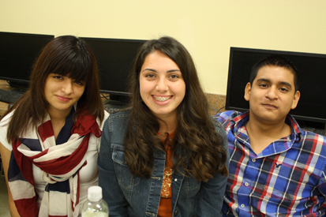
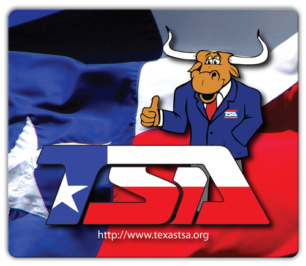
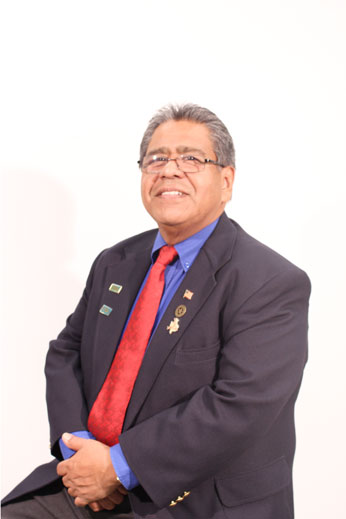
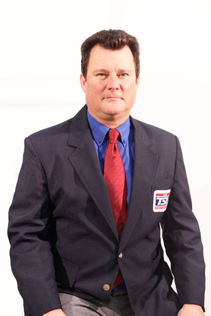
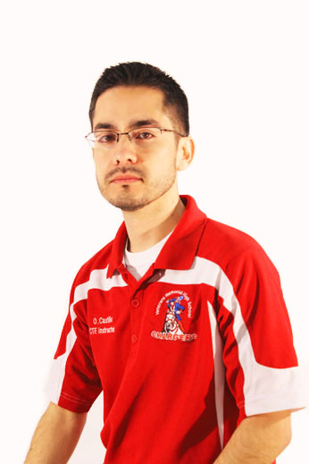
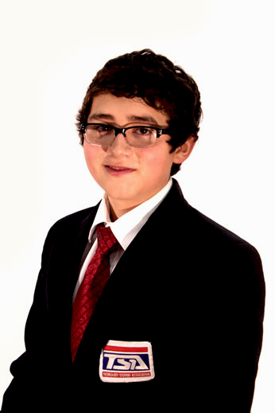
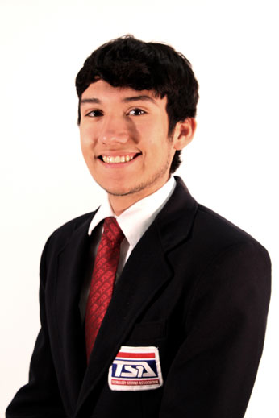
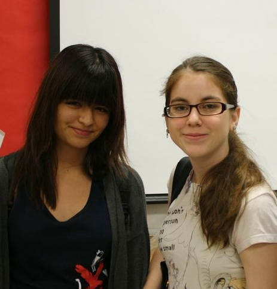
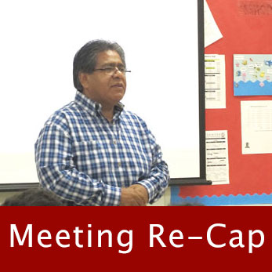

About Technology Students Association
TSA, Mission Statement

"The Technology Student Association fosters personal growth, leadership, and opportunities in technology, innovation, design, and engineering. Members apply and integrate science, technology, engineering and mathematics concepts through co-curricular activities, competitive events and related programs."
- Technology Students Association, Mission Statement
"Learning to Live in a Technical World"

I believe that Technology Education holds an important place in my life in the technical world. I believe there is a need for the development of good attitudes concerning work, tools, materials, experimentation, and processes of industry.
Guided by my teachers, artisans from industry, and my own initiative, I will strive to do my best in making my school, community, state, and nation better places in which to live.
I will accept the responsibilities that are mine. I will accept the theories that are supported by proper evidence. I will explore on my own for safer, more effective methods of working and living.
I will strive to develop a cooperative attitude and will exercise tact and respect for other individuals. Through the work of my hands and mind, I will express my ideas to the best of my ability.
I will make it my goal to do better each day the task before me, and to be steadfast in my belief in my God, and my fellow Americans.
- Technology Students Association, Motto and Creed
Meet Our Chapter
Our Advisors

Mr. Rodriguez teaches Introduction to Engineering and Principles of Engineering at Veterans. He has been a part of TSA for many years and founded the first TSA chapter at Veterans and paved the way for many students to succeed.
"I take pride in being one of the "founding fathers" of TSA. Competition season is my favorite time of the year! From helping students compete to organizing fundraisers, TSA has been a huge part of my life since day one!"
Steve Rodriguez

Mr. Villarreal teaches Introduction to Engineering, Principles of Engineering, and Digital Electronics for the STAMP program. Mr. Villarreal is dedicated to TSA and encourages all engineering students to participate in competitions.
"TSA has always played a huge role in my life. I am the regional leader of TSA and I work hard to give my students an enticing experience."
Luis Villarreal

Mr. Castillo teaches Audio/Video Technology and Communications at Veterans Memorial. He was the former engineering teacher, but he is still a STEM enthusiast.
"I love TSA becuase I get to see all the bright young minds of my students at work. I enjoy watching them bring their projects to life."
Oscar Castillo
Our Officers
Jose Elizondo is the Veterans Memorial High School TSA Chapter's Co-President. He has been involved with TSA since his freshman year. Jose is an active member of the Green Team and National Honor Society. Jose has been ranked in the top 5 and 10 percents throughout high school. Jose is going to be at your Texas State Competition and he will be running to be your future Texas TSA President!
"Since I was young, TSA has played a huge role in my life. I live and breathe for TSA!"
Jose Elizondo
Maria Rodriguez is the Co-President of our TSA chapter and is a Junior at Veterans. Maria prides herself with being a part of TSA since Freshman year. Maria also participates in SkillsUSA and National Honor Society.
"I have been apart of TSA all my life, through my dad (who is also the advisor) and I love every second of the competitions and the leadership conferences."
Maria Rodriguez
Jaime Martinez is the Vice President of the chapter. Jaime is a Sophomore at Veterans and is on the Varsity Swimming Team. Jaime has been involved with TSA since his Freshmen year.
"TSA is a great organization for aspiring engineers to spend time learning and competing with one another."
Jaime Martinez
Alejandra Parra is the Secretary of TSA at Veterans. Alejandra is currently a junior on the Tennis team, SkillsUSA, and Green Team. Ale has been ranked in the Top 5 and Top 10 percent since freshman year.
"TSA has taught me how important it is to become a leader in my community, because of TSA I strive to play a leadership role any chance I get."
Alejandra Parra

Cesar Davila is the Veterans Memorial TSA Treasurer. Cesar is a Sophomore at Veterans. Cesar participates in TSA's Dragster competition and is apart of the Webmaster Team.
"Dragster Design is my favorite part of TSA. Designing and building my dragster brings me a great feeling of accomplishment."
Cesar Davilla
Aleida Olvera is the Veterans TSA Reporter. Aleida is a Sophomore at Veterans Memorial High School. Aleida, in addition to TSA, is a member of Art Club, Book Club, Sophomore Class and Student Council Secretary. Aleida was ranked in the top 10 percent for her freshman year.
"I love TSA because of the thrill I get during competition season! I live to compete!"
Aleida Olvera
Cassie Gonzalez is the Madaam Seargant-at-Arms of our TSA Chapter. Cassie is a Sophomore at Veterans Memorial High School and is apart of HOSA, Cross Country, and the Track & Field Team alongside TSA.
"Although this is my first year in TSA, I have already fallen in love with it. The state leadership conference was amazing! It was great to see all the faces of other students who love technology just as much as I do!"
Cassie Gonzalez

Gilbert Saldana is the TSA Sergeant-at-Arms at Veterans Memorial. Gilbert is a Junior Veterans Memorial High School he is a member of the Golf Team, Book Club, Student Council, and National Honor Society. Gilbert has been in the top 5 percent since his freshman year. He will be at the Texas TSA State Competition, because he will be running for Texas TSA's next Sergeant-at-Arms!
"I am proud of our chapter and the progress it has made even though it is our 2nd year. We are still young, but I know we are going to make a huge impact."
Gilbert Saldana
Spotlight on Our Members

"TSA is the best thing that ever happened to me. Through TSA I have made some of my most lasting friendships and TSA spurs me to try my best with the competitions."
"TSA is my high school life rolled up into three letters. Most of the friends that I have made are because of TSA and so are the memories. TSA is simply amazing."
- Anahi Barron & Alissa Flores
TSA Meeting Re-Cap

Permission slips for competition have been given out! Please see Mr. Rodriguez in B-229 to pick up your slip, turn it in by Thursday or you will not be allowed on the bus to competition!
- Mr. Steve Rodriguez